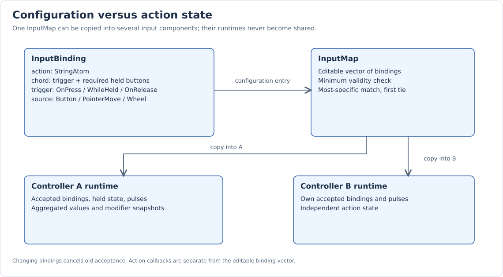
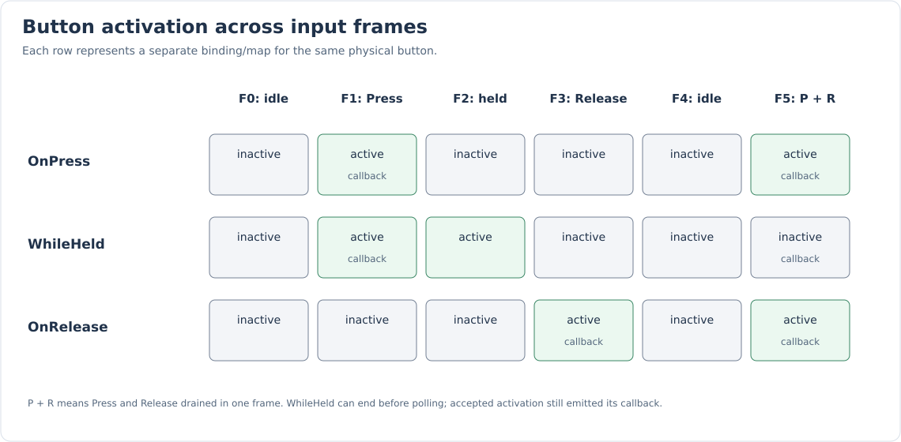

Actions and Bindings
A button is a keyboard key or mouse button. A chord describes the button completing a gesture and any buttons that must already be held. A binding maps that gesture to a semantic action and defines when the action is active.
Use Core::StringAtom and the _atom literal for static action names. Names are
local to each input component: two components can both have Run with independent
configuration and runtime state.
Binding data
struct InputBinding
{
Core::StringAtom action{};
KeyChord chord{};
InputActionTrigger trigger = InputActionTrigger::OnPress;
InputEventType source = InputEventType::Button;
};
| Field | Default | Meaning |
|---|---|---|
|
Empty atom |
Name queried by consumers. |
|
Keyboard None |
Completing button for Button; optional held gate for PointerMove/Wheel. |
|
Empty vector |
Additional held keyboard keys and/or mouse buttons. |
|
OnPress |
Button activation rule; PointerMove/Wheel are always frame transients. |
|
Button |
Event family: Button, PointerMove, or Wheel. |
InputMap::IsValid() requires a nonempty action and, for Button, a non-None trigger.
PointerMove/Wheel may have no gate. This is minimum validation, not comprehensive
schema checking: it does not diagnose conflicts, duplicate requirements, or invalid
enum values constructed by callers.
Physical button identity
InputButton holds either Platform::Keyboard::Key or Platform::Mouse::Key.
The variants remain distinct even when numeric codes overlap. All eight mouse
buttons are supported: Left, Right, Middle, and _4 through _8.
Equality compares physical variants. Chord matching separately normalizes Right Shift, Control, Alt, and Super to their Left equivalents. A requirement for Left Control therefore accepts Right Control. Device state still stores both physical sides, so releasing one side while the other is held preserves the logical modifier.
Scancodes are retained in raw events but do not participate in binding resolution. There is no gamepad, touch, analog-stick, device-ID, or player-ID binding model yet.
Chords
struct KeyChord
{
/// Keyboard key or mouse button that completes the chord and triggers its action.
InputButton triggerKey;
/// Keys and mouse buttons that must already be held when triggerKey is pressed.
std::vector<InputButton> requiredKeys;
[[nodiscard]] static KeyChord Exact(InputButton key);
[[nodiscard]] bool matches(InputButton eventKey,
const std::vector<InputButton>& pressedKeys) const;
[[nodiscard]] bool contains(InputButton key) const;
};For Button events, the normalized trigger must match the event button and every required key must appear in the normalized held-button snapshot. Requirements are a subset; extra held keys do not invalidate a chord.
KeyChord::Exact(W) means “W with no required keys”, not “W with no modifiers”.
For a no-modifier command, inspect the callback’s modifier snapshot, as the editor
Delete handler does.
Requirements can mix devices. A keyboard trigger can require a mouse button; a mouse trigger can require another mouse button and a keyboard modifier. The trigger/source chooses the channel: keyboard-triggered Button is Keyboard; mouse-triggered Button, PointerMove, and Wheel are Pointer. The channels of required keys do not change that classification.
Most-specific match
For each press/movement/wheel event, only one binding wins within a component. Its specificity score is:
requiredKeys.size() + (triggerKey is not None ? 1 : 0)
The greatest matching score wins; equal scores keep the first vector entry. Trigger type has no priority. Duplicate required keys count toward the score, so avoid duplicating requirements. Specificity is not compared across controllers.
The modified S binding wins over plain S in this executable example. Right-side modifiers work, and OS repeat does not retrigger the action:
TEST_F(InputControllerTests, MostSpecificChordWinsAndRightModifiersWork)
{
auto controller = InputController::Create("Game"_atom, InputContext::Gameplay);
int saved = 0;
controller->bind("Plain"_atom, KeyChord::Exact(Key::S));
controller->bind(
"Save"_atom,
{ .triggerKey = Key::S, .requiredKeys = { Key::Left_Control, Key::Left_Shift } },
[&](const InputActionEvent&) { ++saved; });
key(Key::Right_Control, State::Pressed);
key(Key::Right_Shift, State::Pressed);
key(Key::S, State::Pressed, GLFW_MOD_CONTROL | GLFW_MOD_SHIFT);
frame();
EXPECT_EQ(saved, 1);
EXPECT_TRUE(controller->isActive("Save"_atom));
EXPECT_FALSE(controller->isActive("Plain"_atom));
key(Key::S, State::Repeated);
frame();
EXPECT_EQ(saved, 1);
EXPECT_FALSE(controller->isActive("Save"_atom));
}Button triggers
ENUM_CLASS();
enum class InputActionTrigger : std::uint8_t
{
WhileHeld,
OnPress,
OnRelease
};| Trigger | When isActive() is true |
Callback |
|---|---|---|
OnPress |
Accepted Press until the next input frame begins. |
Once for accepted Press. |
WhileHeld |
Accepted Press until the trigger/requirement is released or cancellation occurs. |
Once at activation; continuous behavior uses polling. |
OnRelease |
For the frame in which a previously accepted chord ends. |
Once when that chord ends through physical release. |

An OnRelease binding must accept its initial Press. A context that becomes available only on Release cannot inherit another context’s press. Releasing a required key also ends the chord and can fire OnRelease; release is not restricted to the trigger button.
The runtime stores the accepted binding. When one action has several bindings, the binding that accepted Press determines the release rule.
TEST_F(InputControllerTests, ReleaseTriggerLastsOneFrame)
{
auto controller = InputController::Create("Game"_atom, InputContext::Gameplay);
controller->bind("Release"_atom, KeyChord::Exact(Key::W), InputActionTrigger::OnRelease);
key(Key::W, State::Pressed);
frame();
EXPECT_FALSE(controller->isActive("Release"_atom));
key(Key::W, State::Released);
frame();
EXPECT_TRUE(controller->isActive("Release"_atom));
frame();
EXPECT_FALSE(controller->isActive("Release"_atom));
}Frame boundaries and short taps
processEvents() clears previous transients before draining queued events.
If Press and Release arrive in the same drain:
-
OnPress remains active for that frame.
-
OnRelease produces a pulse for that frame.
-
WhileHeld ends before the scene tick and may be false when polled.
A callback still observes a WhileHeld activation that ends before the scene tick. Use callbacks for discrete events that must be observed between ticks.
isActive() does not consume the action. Repeated reads in a frame give the same
result unless code changes routing, bindings, enable state, or runtime state.
Button Repeat and None do not activate routed actions. The runtime has no repeat
interval or frequency limiter.
PointerMove and Wheel
PointerMove values are differences between successive window cursor positions. The first sample establishes a baseline and produces zero delta; zero deltas are skipped. Wheel values preserve the two-dimensional scroll offset.
The input layer does not multiply these values by delta time, speed, or sensitivity. Consumers apply those conversions. Position is a window cursor position, not a world coordinate or an automatically converted viewport coordinate.
For PointerMove/Wheel:
-
An empty trigger accepts ungated events if routing permits them.
-
A nonempty trigger must be held, as must required keys.
-
Every accepted event produces frame-transient state regardless of stored trigger rule.
-
Polling returns the sum of accepted values during the frame.
-
A callback receives each individual value rather than the accumulated total.
-
Event state is normally None;
isPressed()is not the way to identify a pointer action.
The spectator adds Wheel and RMB-gated PointerMove bindings:
auto bindings = input->getBindings();
bindings.push_back({ .action = "Scroll camera"_atom, .source = InputEventType::Wheel });
bindings.push_back({ .action = "Rotate camera"_atom,
.chord = KeyChord::Exact(Platform::Mouse::Key::Right),
.source = InputEventType::PointerMove });
input->setBindings(bindings);Mouse-gated pointer gestures also have router ownership established by an accepted mouse Press; see Pointer ownership.
Several bindings for one action
Runtime activity is logical OR across contributing bindings. Modifiers are bitwise
OR and values are summed. Two held Button bindings produce (2, 0) rather than a
clamped (1, 0); use isActive() for boolean behavior.
TEST_F(InputControllerTests, ReleasingOneBindingKeepsAnotherBindingOfTheSameActionHeld)
{
auto controller = InputController::Create("Game"_atom, InputContext::Gameplay);
controller->setBindings({ { .action = "Move"_atom,
.chord = KeyChord::Exact(Key::W),
.trigger = InputActionTrigger::WhileHeld },
{ .action = "Move"_atom,
.chord = KeyChord::Exact(MouseButton::Left),
.trigger = InputActionTrigger::WhileHeld } });
key(Key::W, State::Pressed);
mouse(MouseButton::Left, MouseState::Press);
frame();
EXPECT_TRUE(controller->isActive("Move"_atom));
mouse(MouseButton::Left, MouseState::Release);
frame();
EXPECT_TRUE(controller->isActive("Move"_atom));
key(Key::W, State::Released);
frame();
EXPECT_FALSE(controller->isActive("Move"_atom));
}Use setBindings() or the InputMap vector constructor for alternate keys.
Repeated bind() calls replace the first existing entry with the same action name.
They do not append alternate bindings.
bind() returns true only for insertion. False means either a valid replacement
or invalid input. unbind(action) removes all entries for that action and reports
whether anything was removed.
Polling, callbacks, and delegates
Polling suits continuous movement and frame totals. Action-specific callbacks suit
commands and individual deltas. The onAction delegate observes all emitted actions.
Emission order is runtime update, action callback, then onAction delegate.
All run synchronously inside input processing. A WhileHeld callback is not emitted
on every held frame.
setActionCallback() is independent of editable configuration. Removing/replacing
bindings preserves handlers. Passing an empty callback removes the handler;
an empty action name is ignored.
Clones do not copy callbacks/subscriptions, and serialization does not persist them.
Install handlers in the owning component’s initialization path and avoid duplicate
delegate subscriptions after reinitialization.
Dispatch copies the handler/delegate and protects the currently emitting intrusive component. Callbacks may edit their bindings or release their last external reference. Pending recipients are rechecked: destruction, disabling, context changes, or binding revision changes can skip a later delivery. Do not use callback order to arbitrate same-context gameplay conflicts.
Cancellation
Context changes, disabling, focus loss, capture, modal blocking, and rebinding can discard accepted bindings without manufacturing a physical Release. An interrupted OnRelease command therefore does not execute.
InputActionEvent.canceled and isCanceled() exist, but current cancellation is
silent: it emits no canceled events. isRepeated() also exists, but Button Repeat
is ignored by routed input. Do not rely on either notification being emitted.
See Contexts for interruption and fresh-press rules, and Serialization for configuration mutation.